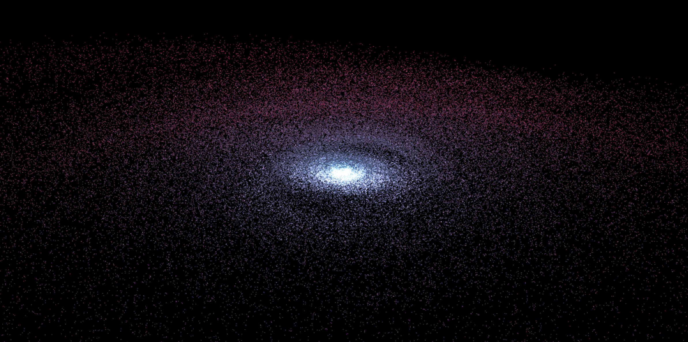

A galaxy in 36 lines of code

A processing sketch that creates an impressive animation of stars orbiting a black hole. Initially written in Kotlin using ProcKt (my own wrapper around Processing), I ported it back to Java to see how compact I could make the code.
ArrayList<PShape> rings = new ArrayList<PShape>();
void setup(){
size(1200, 600, P3D);
blendMode(ADD);
smooth(8);
float innerRad = 1f, outerRad = 9f, increment = 1f;
for(int ringIndex = 0 ; ringIndex < 50 ; ringIndex++){
PShape ring = createShape();
ring.setStrokeWeight(1.5f);
ring.beginShape(POINTS);
ring.stroke(lerpColor(color(73, 115, 161), color(157, 47, 77), ringIndex/50f), 175f);
for(int starIndex = 0 ; starIndex < 3000 ; starIndex++){
float a = random(0f, 1f) * TWO_PI;
float r = sqrt(random(sq(innerRad), sq(outerRad)));
ring.vertex(r * cos(a), r * sin(a), random(-increment, increment));
}
ring.endShape();
rings.add(ring);
innerRad += increment;
outerRad += increment*1.5f;
increment += 1;
}
}
void draw(){
background(0);
camera(-width/2f, -height/2f, 150f, 0f, 0f, 0f, 0f, 1f, 0f);
for(int index = 0 ; index < 50 ; index++){
pushMatrix();
rotateY((TWO_PI/(index*index)*frameCount)/10);
rotateX(1.45f);
shape(rings.get(index));
popMatrix();
}
}